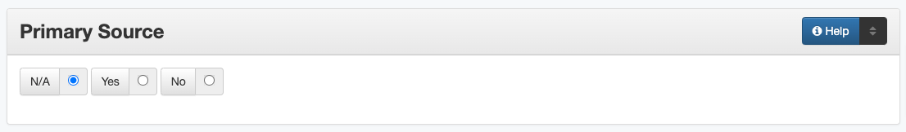

Primary Source
Definition
The primary source field designates firsthand accounts of historical subjects.
Where Can the Primary Source Information be Found?
Whether or not an item is a primary source is determined by examining the item
For our purposes, primary sources are firsthand accounts or archival copies of historical items
How Primary Source Works in the Metadata Form
- Parts:
N/A – radio button
Yes – radio button
No – radio button
- Repeatable?
No
- Required?
No (more information)
How Should the Primary Source be Filled in?
If the resource is a primary source, click the radio button marked “Yes” on the metadata entry form
If the resource is not a primary source, click the radio button marked “No”
If the item contains components that are both primary and secondary, choose “No” and include a note
If it is unclear whether the item is a primary source or if it cannot be determined, choose the radio button marked “N/A” (not applicable)
Is the item a primary source?
Primary Source |
Not a Primary Source |
|---|---|
autobiographies |
biographies |
a personal collection of original school photographs |
yearbooks |
journal article written in 1943 about WWII |
journal article written in 2008 about WWII |
original census data published by the government |
written history that quotes census numbers |
For more clarification about a particular item:
See if the item fits one of the example categories in the next section
Try reading the Scholars’ Definitions of Primary Sources
Other Examples:
Diaries, personal journals, letters, memos, postcards, manuscripts, memoirs, autobiographies, oral histories
Private papers, deeds, wills
Speeches, interviews, personal accounts, oral histories
Documentary photographs, audio recordings, movies, or videos
Government records, proceedings, court records, census data, patents
Records of organizations (e.g., minutes, reports, correspondence)
Public opinion polls, consumer surveys
Scientific experiments, field notes, artifacts, schematic drawings, technical reports
City directories
Maps
Paintings, sculptures, jewelry
Published materials (books and magazine/newspaper articles) written AT THE TIME about a particular event
Reprinted primary sources (often in reference books such as Speeches of the American Presidents or Documents of American History)
Resources
Scholars’ Definitions of Primary Sources
More Guidelines:
Comments
To describe the category of the resource, use the Resource Type element.